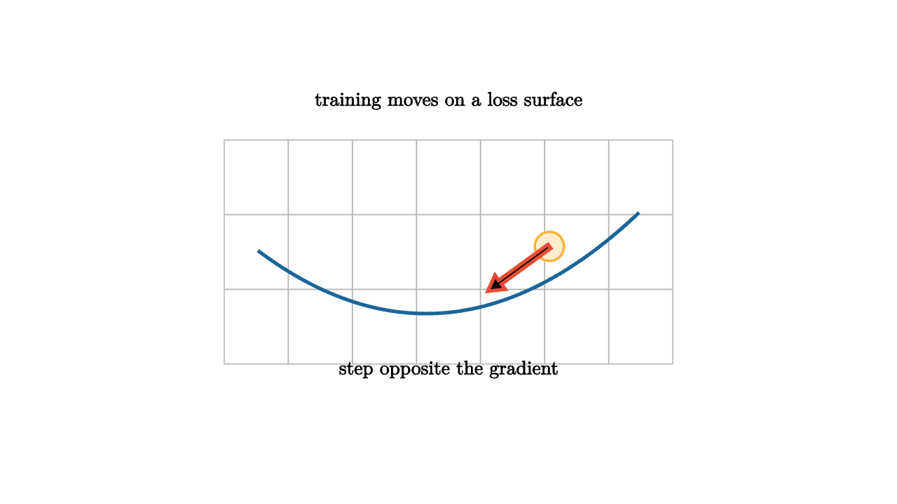

Training a model means changing parameters to reduce loss. The loss is a landscape over parameter space. A point on that landscape is one choice of weights. The height is how badly the model performs. A gradient points uphill, so gradient descent moves in the opposite direction.

source
let soft = |col, amount| lerp(WHITE, col, amount)
mesh descent = [
center{1.35u} Text("training moves on a loss surface", 0.62),
stroke{LIGHT_GRAY, 1} LineGrid([-2, 2, 8], [-1, 1, 4], 1),
stroke{BLUE, 3} ExplicitFunc(|x| 0.25 * (x + 0.2) * (x + 0.2) - 0.55, [-1.7, 1.7, 80]),
center{0.9r + 0.05u} fill{soft(ORANGE, 0.24)} stroke{ORANGE, 2} Circle(0.13),
stroke{RED, 3} Arrow(0.9r + 0.05u, 0.35r + 0.35d),
center{1.05d} Text("step opposite the gradient", 0.62)
]The learning rate controls step size. Too small, and training crawls. Too large, and the parameter can overshoot or even diverge. In high dimensions, the surface may contain valleys, saddles, plateaus, and sharp directions mixed with flat directions. The geometry of the loss surface explains why optimization is often the practical heart of machine learning.
A gradient is local. It does not know the whole landscape. It only says what direction changes loss fastest at the current point. This local quality is both a limitation and a strength. We can train large models because each update uses local derivative information rather than a global search over all possible parameters.
The basic update is
where $\eta$ is the learning rate. Stochastic gradient descent estimates the gradient from a batch of examples rather than the whole data set. That adds noise to each step, but it makes large-scale learning possible and can help the optimizer move through shallow regions.
source
let samples = 20
let loss = |x, y| 0.45 * (x * x + 0.35 * y * y) + 0.08 * sin(5 * x)
let color_at = |pos, idx| keyframe_lerp([0 -> GREEN, 0.4 -> BLUE, 1 -> ORANGE], min(1, loss(pos[0], pos[1])))
"Surface"
camera = Camera([3, -3, 2.0], [0, 0, 0], [0, 0, 1])
mesh surface =
stroke{BLACK, 0.8}
point_map{|p| [p[0], p[1], loss(p[0], p[1])]}
ColorGrid(color_at, [-1.4, 1.4, samples], [-1.0, 1.0, samples])
mesh title = center{1.35u} Text("loss is height over parameters", 0.62)
play [Fade(0.8, [&surface]), Write(0.7, [&title])]
"Step"
mesh path = stroke{RED, 3} Polyline([[0.95, -0.5, loss(0.95, -0.5) + 0.05], [0.55, -0.25, loss(0.55, -0.25) + 0.05], [0.25, -0.12, loss(0.25, -0.12) + 0.05]])
title = center{1.35u} Text("updates trace a path downhill", 0.62)
play [Write(1.0, [&path]), Trans(0.7, [&title])]
"View"
camera = Camera([2.2, -1.4, 1.25], [0, 0, 0.2], [0, 0, 1])
play CameraLerp(&camera, 1.4)The geometry also explains regularization. Penalties such as weight decay reshape the loss surface by making large weights expensive. Constraints restrict the region where parameters may travel. Optimization is not only about finding a low point. It is about shaping the landscape so that low points generalize.
The lesson to keep: training is motion through parameter space. Gradients provide local directions, learning rates choose stride length, and regularization reshapes the terrain. A good optimizer is therefore a geometric tool, not only a numerical routine.